|
Best Care Anywhere Here's an Idea: A Civilian VA for the Uninsured, and Maybe the Rest of Us
Based on the book Best Care Anywhere by Phillip Longman (reviewed here and here)
Yes, there is a solution to the health care crisis. It starts with the comparatively limited step of creating a high-quality lifelong health care delivery system for the uninsured. The true cost of healthcare is a chronic, long-term cost to society, which cannot be measured accurately over the short term or on a per-unit or per-diagnosis basis. It is the ‘total cost of ownership’ of healthcare costs over the patient’s lifetime that is relevant. Phillip Longman’s book Best Care Anywhere: Why VA Healthcare is Better than Yours describes “In study after study published in peer‐reviewed journals, the VA beats other health care providers on virtually every measure of quality. These include patient safety, adherence to the protocols of evidence-based medicine, integration of care, cost‐effectiveness, and patient satisfaction. The VA is also on the leading edge of medical research, due to its close affiliation with the nation’s leading medical schools, where many VA doctors have faculty positions.” In the VA system investments in quality make sense precisely because the system’s financial interests are in alignment with the health interests of its patients: the VA must pay for the total cost of care over the lifetime of all of their patients. The VA cannot jettison their patients outside their system into an “insurance exchange” when patients get sick. There is no shell game in shifting costs from employers to individuals. The VA simply provides a “lifetime warranty” to all of their patients for their entire healthcare needs. Does the American public want a “lifetime warranty” for their healthcare? If so, what is the best way to offer this?
What Phil Longman proposes is this: Take the existing, ad hoc system we use for treating the uninsured and turn it into a real integrated system. The organizing blueprint of this new system would come from the one truly successful national health care system we currently have: the VA. The VA model is that most rare of health care systems: one with the correct alignment of interest between patients and providers. This is why, for example, the VA has emerged the world leader in electronic medical records and the implementation of evidence-based medicine these records make possible.
VA’s Health Care System The Department of Veterans Affairs (VA) is responsible for 24 million veterans, of which 8.9 million are enrolled in VA care under the Veterans Health Administration (VHA). The VHA operates more than 1,400 facilities nationwide, including 950 outpatient clinics, 153 hospitals, 134 nursing homes, 230 facilities known as Vet Centers, which provide readjustment counseling and outreach services, and more than 150 rehabilitation and home care programs. All VA facilities use a single integrated electronic patient records system (VistA), which shares all data throughout the national network of facilities to provide the highest quality of care for patients anywhere in the US. Medical services are provided through the inpatient and outpatient facilities run by the VHA. Those services include routine health assessments, readjustment counseling, surgery, hospitalization, and nursing home care. VHA’s medical personnel also provide emergency management services, train medical students and other health care providers, and conduct research. In 2010, the VHA outpatient clinics had over 80 million visits by veterans for services that included routine health assessments, specialty care, and outpatient surgery. VHA employed a total of about 245,000 full-time-equivalent employees in 2010, including nearly 17,000 physicians and 67,000 nurses and nursing assistants. The VA budget is $50 billion for medical care, research, and education. The VA supports the largest medical education organization in the United States, with over 65% of all physicians rotating through the VA during medical school or postgraduate training.
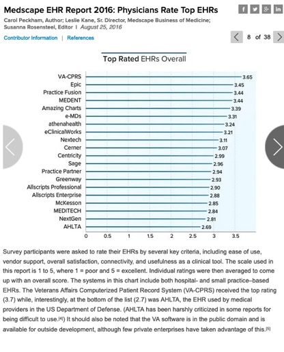 Source: http://vaforvets.va.gov/veterans/aboutva/Pages/organization.aspx
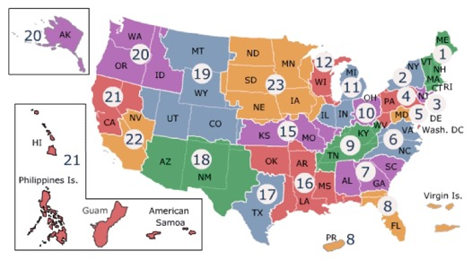 Source: http://www2.va.gov/directory/guide/division.asp?dnum=1
Reference: Potential Costs of Health Care for Veterans of Recent and Ongoing U.S. Military Operations, Statement of Heidi L. W. Golding, Principal Analyst for Military and Veterans’ Compensation, Congressional Budget Office, July 27, 2011 [PDF]
VistA: The key to the VA’s success
The VA uses an electronic health records system (VistA), which they developed over two decades at a cost of $7 Billion. Because it was developed at taxpayer expense, it is available as open-source resource to the public, and has been deployed in hundreds of hospitals outside the VA. VistA’s sole purpose is to provide the platform to deliver the highest quality of care in the most cost effective manner at national scale. In every institution it has been deployed – both inside and outside the VA - it has achieved all these goals.
The VA has no marketing department, does not spend money on trade shows or trade associations, nor does it spend any money on lobbyists to promote the sale of VistA, because the government is not in the business of selling its software; it is a free resource for the public to use as it sees fit. For this reason, many have not heard of VistA, or more likely, have heard inaccurate and disparaging information by private sector EHR vendors and their lobbyists. However, as you will see below, VistA is a disruptive technology in the EHR marketplace that has the potential to not just transform the VA, but also to transform healthcare in the rest of the US.
The VA outperforms all other sectors in delivering the highest quality of care The VA outperforms all other private and public sectors in quality of care by a significant margin. A 2004 RAND study concluded that the “VistA healthcare system outperformed all other sectors of American health care in 294 measures of quality”. The Congressional Budget Office (CBO) report also says that the VA scores better than the private sector when it comes to patient satisfaction. In 2005, the VA achieved a satisfaction score of 83 out of 100 for inpatient care and 80 out of 100 for outpatient care. The same survey showed private-sector providers of got 73 for inpatient care and 75 for outpatient care.
The VA Outperforms the Nation on Nearly Every Quality Measure
Reference: Asch, Steven M., Elizabeth A. McGlynn, Mary M. Hogan, Rodney A. Hayward, Paul Shekelle, Lisa Rubenstein, Joan Keesey, John Adams, and Eve A. Kerr, “Comparison of Quality of Care for Patients in the Veterans Health Administration and Patients in a National Sample,” Annals of Internal Medicine, Vol. 141, No. 12, December 21, 2004. [Html]
The VA leads the nation in transition to preventive, outpatient, and home-based care The Veterans Health Administration is the United States’ largest integrated health system. Once disparaged as a bureaucracy providing mediocre care, the VA reinvented itself during the past decade through a policy shift mandating structural and organizational change, rationalization of resource allocation, explicit measurement and accountability for quality and value, and development of an information infrastructure supporting the needs of patients, clinicians, and administrators. Today, the VA is recognized for leadership in clinical informatics and performance improvement, cares for more patients with proportionally fewer resources, and sets national benchmarks in patient satisfaction and for 18 indicators of quality in disease prevention and treatment. Over the span of eight years the Veterans Administration healthcare system achieved the following transformations: (1) Reduction in hospital and long-term-care beds from 92,000 to 53,000 and an increase in outpatient clinics from 200 to 850 (2) A 75% increase in the number of patients treated on an annual basis (from 2.8 million to 4.9 million) with only a 32% cumulative increase in budget (from $19 billion to $25 billion) (3) Clinicians who have access to complete medical records for almost all patient visits and all care settings (4) Clinicians who willingly enter medication orders 94% of the time (5) Patients who are increasingly satisfied with their care, ranking the service consistently higher than the competition (6) Improved patient outcomes, achieved at costs 25% less than any other health care sector. Such transformation is impossible to achieve without vision, leadership, talent, teamwork and tools. The most important of these tools is the VA's clinical information system, VistA.
Using VistA, the VA has put into practice an “accountable care organization” and “patient-centric care” twenty years before these terms became fashionable.
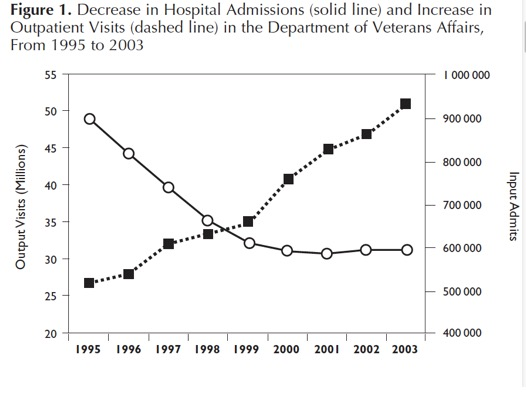
Reference: Morgan MW. Healthc Pap. 2005; 5(4): 26-9 The Veterans Health Administration: Quality, Value, Accountability, and Information as Transforming Strategies for Patient-Centered Care. Jonathan B. Perlin, MD, PhD, MSHA; Robert M. Kolodner, MD; and Robert H. Roswell, MD [PDF] [html]
VistA: Enables lower cost of healthcare than all other healthcare delivery systems A 2010 report by the Congressional Budget Office (CBO) says the VA (U.S. Department of Veterans Affairs) does a much better job controlling health care costs than the private sector delivery system, which is used by Medicare and all private sector insurance plans. The CBO estimates that the VA’s health care cost per enrollee grew by only 1.7 % from 1999 to 2005, which amounts to 0.3% annually. Medicare’s costs grew 29.4 % per capita over that same period, or 4.4 % per year. In the private sector insurance market (employer and individual plans) premiums increased by more than 70% during this period.
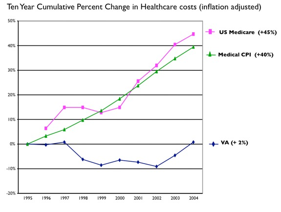
VistA: One Database. One Patient. One Patient Record. VistA is a single, integrated enterprise EHR that uses one single database. This enables seamless movement of patient data throughout the VistA and VA system without any complex interfaces.
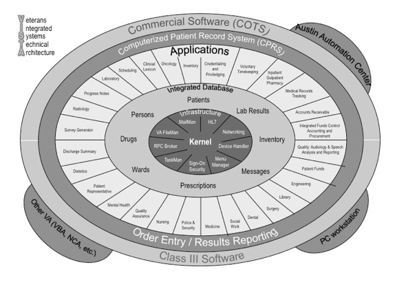
VistA: Universal access to all patient data at all care facilities nationwide Map of national care network of 1400 VistA hospitals and clinics. All care sites share all patient information between all other care facilities.
Source: https://www.google.com/fusiontables/DataSource?snapid=S996904uVY4 VA, DoD, HHS, IHS, State Gov, OSEHRA, HIT Vendors, & OHNews.
VistA: Billions in positive return on investment The estimated cost of development of VistA over its lifespan was over $7 Billion, but it has saved the VA over $500 million annually in “hard savings” of non-duplicated medications, exams, and tests, with the cumulative savings today of over $10 Billion. The net value of the VA’s health IT investments is estimated at $3.09 billion in cumulative benefits net of investment costs. Studies of non-VA hospitals that have deployed VistA have had similarly positive return on investment, with similar hard savings offsetting the cost of deployment. Source: Health Affairs 29, NO. 4 (2010): 629–638
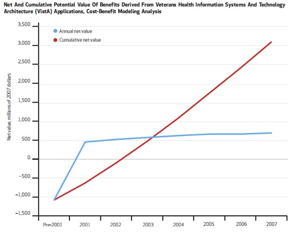
Reference: The Value From Investments In Health Information Technology At The U.S. Department Of Veterans Affairs. Colene M. Byrne1, Lauren M. Mercincavage, Eric C. Pan, Adam G. Vincent, Douglas S. Johnston,, Blackford Middleton. Health Affairs vol 28 no 4 629-638. [html ]
VistA: The highest rated Enterprise EHR in physician satisfaction In the 2011 User Satisfaction Survey published by the American Association of Family Practice, three thousand physicians rated thirty of the most commonly used EHRs in seventeen aspects of clinical usability. VistA was rated #1 in all five areas essential to deliver high quality care such as “tools for disease management” and “higher quality care than paper charts”. Compare this with other Enterprise EHRs such as Epic or Cerner which cost ten times as much to deploy, neither of which garnered even one top rating.
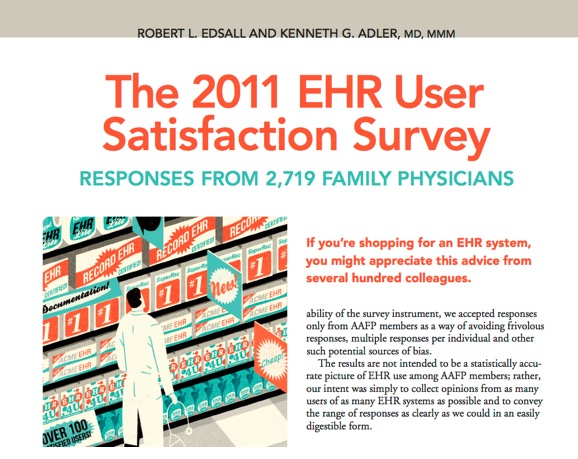
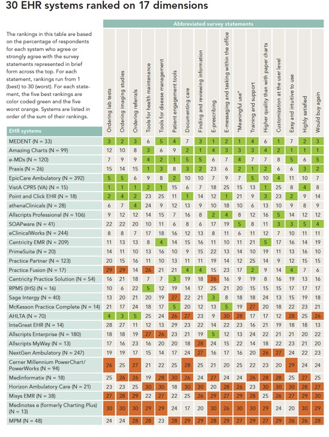
Reference : The 2011 EHR User Satisfaction Survey. Responses from 2719 Family Physicians. Robert L. Edsall and Kenneth G. Adler, MD, MMM. Fam Pract Manag. 2011 Jul-Aug;18(4):23-30. [ Html ]
VistA: The highest rated Enterprise EHR in enabling higher quality care The most important category that physicians rated VistA #1 was in “enabling higher quality care”.
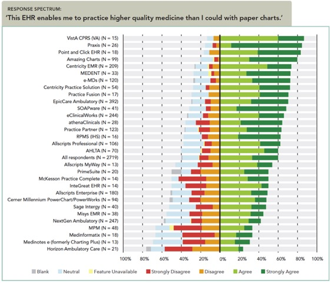
Reference : The 2011 EHR User Satisfaction Survey. Responses from 2719 Family Physicians. Robert L. Edsall and Kenneth G. Adler, MD, MMM. Fam Pract Manag. 2011 Jul-Aug;18(4):23-30. [ Html ]
VistA is about patient care, not buzzwords
The reason of using a single integrated electronic patient information system is to make it possible to share a patient's health record seamlessly between all providers in all care locations throughout the country. This is how VistA has enabled the VA to deliver the highest quality and most cost-effective healthcare in the US. Anatomy of the Vista EHR The Vista EHR allows providers in any of 1400 facilities to exchange all of the patient data with all the other providers anywhere in the country in real-time, to enable the best care anywhere. When a flood destroyed the VA hospital in Louisiana during hurricane Katrina all the veterans were evacuated outside the state, some of the veterans left for Georgia, some for Pennsylvania. In all cases all of patient data was available at all of the VA facilities nationwide, and their care continued seamlessly. Setting the standard for integrated patient-centric care.
Anatomy of a Meaningful Use EHR As a result of the HITECH Act the Federal Government has budgeted $35 Billion to subsidize the cost of deployment of EHRs throughout the private health care sector. As of 2013, over $19 Billion has been distributed to pay for these. What has this accomplished, other than a gold rush for EHR vendors to create and install poor quality systems? Thousands of proprietary EHRs installed throughout the US, none of which exchange any data with each other. With all the vendors using buzzwords “patient-centric care” and “meaningful use” to describe their EHR, can you find the word “patient” anywhere in the graphic of a Meaningful Use EHR?
The fine print of Meaningful Use The Federal Register describes the features and requirements for certification of a healthcare information product such an EHR. Nowhere in the three hundred pages of text does it require the actual exchange of data between EHRs. This requirement existed in Stage 1. In Stage 2 and onward it was removed.
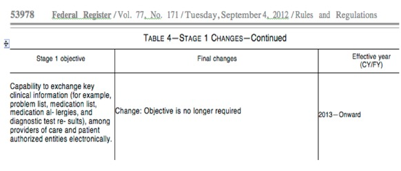
Instead, a certified EHR must be capable of transmitting, within four days of request, a continuity of care document (CCD) to another provider. This transmission may take the form of a fax, secure email (such as Direct), or secure file transfer (though a health information exchange, or HIE). The remainder of the electronic patient record - numbering in the hundreds pages or more - remains in a proprietary format in each EHR and cannot even be transmitted. This information must therefore be printed in hardcopy and then faxed or mailed. Fortunately, the Federal Government has set limits on the cost per page ($1.27 per page for the first twenty pages, and $0.99 per page thereafter). Ask any academic medical center using Epic if they are exchanging patient data with any other institution. They might say they are “exchanging hundreds of thousands of documents with other institutions”. In reality, all they are doing is transmitting CCDs. To Epic’s credit, it is an enhanced CCD containing supplemental information, but unfortunately this can only be read by an Epic system. Similarly, Cerner and other vendors have taken the “high road” and formed an exchange consortium. Like Epic, this provides no more than what they are required to do under Meaningful Use rules in the first place: transmit a CCD. What is meaningful about Meaningful Use if the data is not understood? Even Dr. Seuss passes Meaningful Use (link here).
The Socio-technical Ecosystem of Healthcare Delivery
Healthcare delivery is an incredibly complex and interdependent process. The following table outlines many of the components of the healthcare system, and how these are all inextricably interconnected. It is not coincidental that the quality and cost-effectiveness of open-source VistA is better than what is available in other sectors of the healthcare market: it is because the incentives of open-source healthcare software, like evidence-based medicine, is most aligned with the needs of the public healthcare sector: transparency, accountability, adaptability, quality, and cost-effectiveness.
[a] Over 95% of the hospitals in the U.S. that have deployed open-source VistA achieved Meaningful Use (MU) within the mandated one year time limit. In each case, these institutions received incentive payment greater than the entire cost of deployment, yielding a net positive return on investment (ROI). [b] While primary care providers reported MU with the closed-source systems, this represents a very small fraction of providers. This is due to “rich functionality”, requiring extensive training for physicians, and complex, multi-year deployment, exceeding the one-year time constraint for reporting. In the best-case scenario, incentive payments ($44k/provider; $5-10m / hospital; $25-40m / hospital network) are far out shadowed by the cost of the system ($120m / hospital; $600m/ university network), and do not include the lost productivity of the physicians. [c] VistA uses only open standards for secure medical data exchange, W3C standards for web communication, and exchanges data with all 20 Federal healthcare agencies through the National Healthcare Information Network (NHIN). [d] Each deployment at each institution is custom and with a unique database schema. The lack of standardized schema, namespaces, and data dictionary precludes patient record exchange between these institutions, and precludes national data aggregation. [e] The only information exchangeable between these closed-source institutions is the CCD. However, in this case it also deviates from the standard, and includes a proprietary extension, making this information unreadable by any outside healthcare institution.
References: 3. Medsphere.com [many sub-links] 4. WorldVista.org [many sub-links] 5. Epic.com [many sub-links] 6. http://www.va.gov/vai2/FundedInnovations_VHA.asp 7. http://groups.google.com/group/vista/browse_thread/thread/8ac371435c392dff?pli=1
VistA deployments Worldwide
VistA has major deployments in over thirty countries, including Mexico, Germany, India, Japan, and Jordan. Because these are typically deployed by government agencies, there is no central repository for a definitive number. However, the number of deployments is in the hundreds as of 2012.
In countries such as Jordan, the plan is to roll out VistA throughout the entire country as their national eHealth system, which would comprise nearly one thousand clinics and hospitals in a single national electronic network to care for the entire population of six million.
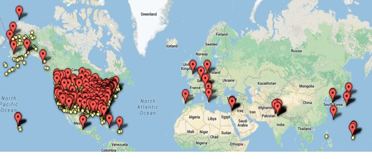
USA 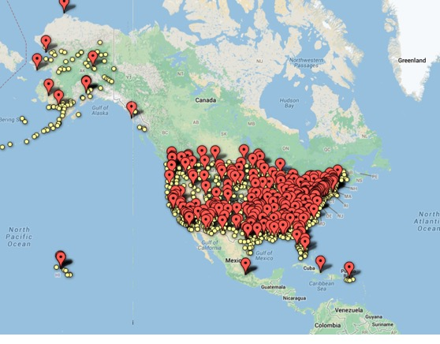
Europe and Middle East 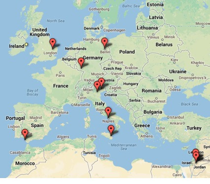 https://www.google.com/fusiontables/DataSource?snapid=S996904uVY4
VistA: Designed for Research
Real-time access to patient data is a pre-requisite for clinical decision support. VistA is the only Enterprise EHR that provides complete, open, real-time access to the entirety of a patient’s electronic medical record. It has no proprietary restrictions based on any vendor’s policies.
Open-source. Vista provides the institution complete ownership and control of all aspects of its infrastructure and technology. This allows the institution to modify any function of the system at any time, and remain flexible for all future regulatory, clinical, and research needs.
Open standards. VistA is built on both healthcare (HL7) and on Internet (W3C) standards, the most universally accepted standard for information exchange. This allows sharing the entirety of a patient’s medical record securely to any provider or institution worldwide. The recipient does not need to install any special software on their computer or be part of the ‘VistA’ network; they only need a web browser. (www.caregraf.org)
Open access. Vista provides full access to all databases and data repositories at all levels in the technology stack using standard interfaces. Vista provides access to all of the data elements in the core data repository through standard, secure World Wide Web and database query protocols.
Real-time comprehensive data access. The File Manager (FileMan) Projection of VistA is a set of tools that allow developers and analysts to inspect File Manager data and structures using SQL like representations. FM Projection does this by "projecting" the FM data and structures, which can be, viewed via standard database query and reporting tools. Included is a Java-based visualizer tool that can also be used to configure what files and fields to project.
This opens up VistA’s data – all of it – in real-time - to providers for clinical decision support, and to others who need data for public health, administration, and quality improvement initiatives.
VistA: Simplicity trumps Complexity for Effective Care
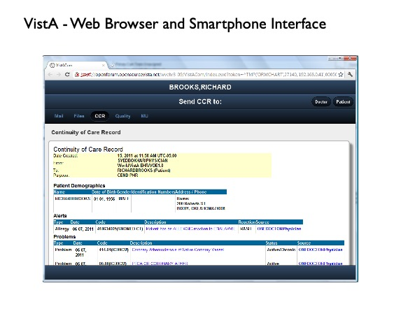 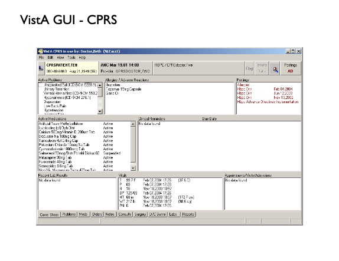
VistA: Videos VistA Overview VistA Overview (VA 2009) link Introduction to VistA (OSCON 2010) Link The VA and VistA (Phil Longman) Link Using VistA for Outpatient Care Link Vista in the UK NHS: Campaign for VistA: Link Vista in Jordan Jordan: National eHealth Project based on VistA (PR Newswire 2009) Link Jordan: VistA – National eHealth System - Introduction link Vista in the News VistA: A Cost-effective EHR (Forbes) Link
VistA: Packages
VistA: Overview
· VistA is the integrated healthcare delivery network of the Veterans Administration (VA). VistA is deployed at 1400 sites, implemented across 31 countries, and has over 200,000 daily users.
· The VA was the first healthcare system to develop and deploy barcode medication administration (BCMA) technology, over 15 years ago, enabling the VA to be virtually free of medication errors (99.97 %).
· Over 90% of all patient orders are entered directly by physicians. In a typical day, 931,000 orders are processed, 616,000 medications administered, 567,000 encounters documented and 534,000 images processed. · VistA has over 2.1 billion orders online and is supporting over 8.5 million active patients. · 65 percent of all U.S. trained physicians since 1995 have used VistA during rotations. VistA is the most familiar EMR system to physicians in the U.S.
VistA: Clinical Summary
VistA is the open-source EHR that was developed at taxpayer expense to provide care to veterans at over 1400 hospitals and clinics throughout the United States, and has been in continuous production use and evolution over the past thirty years. Beyond the highest quality of evidence-based care VistA provides, it is also well suited to multi-facility academic medical centers for the following reasons:
Comprehensive. Vista incorporates functionality from all clinical departments in one comprehensive integrated system. This includes lab, radiology, pharmacy (including Pyxis), barcode medication administration, scheduling, and over thirty other clinical functions.
Standards-based. Vista exchanges healthcare information with the twenty largest Federal healthcare-related agencies, the CONNECT National Healthcare Information Network, regional and state healthcare information exchanges, a number of proprietary commercial EMR systems, and 1400 other Vista-derived EMR’s throughout the world. OpenVista can export and send a patient’s healthcare record to any provider in the world in electronic form using a standard web interface.
Familiar. Over 65% of all physicians in training since 1995 have used VistA on one or more rotations, making VistA the most familiar and EMR in the U.S.
Productive. The system was designed and built by physicians, and is focused on physician workflow. One study at a large academic medical center showed that physician productivity increased over 20% after deployment.
Rapidly deployed. Two days after deployment at a large academic hospital in New York City, over 82% of order entry was done by physicians. Three days after deployment the training team throughout the hospital was decommissioned. Three months post-deployment 98% of all orders were physician entered.
Reduces waste. A large academic medical center found 25% reduction in lab and radiology tests after deploying the VistA EMR because the system effectively prevented duplicate orders from being processed. The VA has saved over $3 Billion in efficiencies of lab ordering and avoidance of duplicate orders.
Low cost. A typical deployment of Vista is five to ten times less costly than a proprietary solution. Although Vista represents an investment of $7 Billion in software development, the VistA software is available to use and deploy at an unlimited number of healthcare facilities for free. The costs of deployment are that of installation and training.
Open access. All the data in the main patient data repository and all aspects of the system are open, transparent, and accessible. This facilitates unrestricted data access for all clinical, administrative, and research purposes.
Summary During the past decade the Veterans Administration has delivered higher quality of care to its millions of patients than any other patient population in the USA - better care than all other private, public, and academic healthcare sectors as measured by objective metrics of quality published in academic medical journals. It also managed to do this at substantially less cost than their private and public counterparts. How is this so? The answer lies in their electronic patient health records system, VistA.
Over 65% of all physicians in the US are proficient users of VistA because most medical schools are affiliated with a VA hospital and their residents and students rotate through the VA. VistA is consistently rated the most usable, familiar, and well-liked enterprise EHR in the US by practicing physicians who have used it and many other systems. The VA does not have a marketing department, does not attend trade shows, and does not otherwise promote its software in the private sector. This is in contrast to commercial EHR vendors, who invest considerable amount of their budget on marketing, and publish “ratings” (established by their trade association) that focus almost exclusively on vendor attributes, quantity of features, and testimonials from IT managers, rather than actual physician assessment of the usability of their products.
VistA enables the advancement of clinical research and national population-based healthcare initiatives, and is the engine that drives the most prolific clinical academic publishing network in the world, with more than thirty-five thousand publications in peer reviewed medical journals to its credit. This is due in part because most VA hospitals are associated with and staffed by academic physicians from every medical school in the country, creating the world’s largest academic medicine network. Over two thousand hospitals and clinics in the USA now use VistA as the foundation of their electronic patient care system, including state-wide government healthcare networks, the Indian Health Service (5 million patients), the Veterans Administration (8 million patients); and the DoD (9 million patients) adopted VistA as its core system twenty years ago.
Epilogue: The Choice of Sociotechnical Ecosystem in Healthcare Determines Evolution or Extinction
Software, in the rapidly changing ecosystem of healthcare, must either rapidly evolve, or become extinct. The following story is one example.
Twenty years ago the DoD needed an EHR, and ultimately adopted VistA as their platform. Today the VA version is so successful, functional, and well liked by physicians that it received a Presidential Award in 2006, and in 2011 was top rated in the nation for usability and functionality. The DoD, on the other hand, spent $10 Billion modifying it with hundreds of proprietary additions to create AHLTA, blocking the ability to modify and evolve the system, resulting in it becoming so unusable and unmaintainable that it is in dire need of replacement. Why was VistA a success and AHLTA not? Clearly one cannot blame the software, because both originated from the same source. It has to do with change management strategy.
The VA approach to change management was to take ownership of the software and build internal capacity for development, allowing for many small clinician-lead programming teams to adapt the software rapidly and continuously at low cost, without the need for elaborate specification writing and contracting issues. This allowed the VistA software to evolve rapidly in an ecosystem of continuous innovation and feedback, modeling the practice of evidence-based medicine: the parts of the software that worked well survived, and the parts of the software that were not effective were discontinued. This continuous and rapid iteration, and the ability to adapt the software, were the key reasons the software success.
The DoD approach, on the other hand, treats their EHR just like it treats everything: an acquisition. Unlike hardware, the acquisition of software is only the beginning of the cost and lifecycle. Over 80% of the cost of software is in the evolution and maintenance of the software. Because of its contracting policies, the DoD needs to get all requirements specified up front (even if many are only of theoretical value, and not grounded in any feedback from working code). Because medicine is not just complex, but constantly and rapidly changing, any specification written would be out of date long before a single line of code could be written.
While it may be tempting for an enterprise to acquire a best of breed product in order to show a “quick win” within a given election cycle, this euphoria is short-lived. Best-of-breed systems are proprietary, making it is impossible to adapt internally; any change would require additional costly and time-consuming contracts. This leads to vendor lock-in for the hundreds of components of their architecture, which do not interoperate, requiring additional consultants and systems integrators. This approach to outsourcing the infrastructure, rather than building an ecosystem for innovation - only maximizes complexity, rigidity, risk, and cost. Most importantly, this ignores the rapidly evolving needs of the end-users, giving physicians an inflexible, poor quality tool to care for patients.
Prologue: Is Healthcare Reform missing the mark?
It is unlikely that the ACA will succeed in providing affordable care for all for several reasons. First, the assumption of ACA that providing “insurance for all” is equivalent to providing “access for all” is unrealistic. We currently have a primary care physician shortage. The ACA’s planned decrease in physician reimbursement combined with the increased workload will drive many providers to earlier retirement, making this shortage even more critical. The providers who do remain in practice will be unwilling to take on new patients because the lowered reimbursements would mean they would run their practice at a loss. Adding 38 million newly “insured” patients without increasing the number of providers or facilities is only giving patients false hope. What good does a nicely laminated insurance card do for patients if they cannot find providers to care for them?
Second, there is no provision in the ACA that exchanges must be more cost effective or affordable than current insurance plans. These exchanges are comprised of the same insurance companies and coverage that patients cannot afford in the first place. Under ACA, businesses will be relieved of providing health benefits and employees will be required to buy their own coverage through an insurance exchange. The result is that millions of individuals will choose to forgo buying insurance. The net effect is an increase in the population without insurance, not less.
Third, the ACA does nothing to reduce the waste of hundreds of billions of dollars of lab tests, studies, and procedures that are unnecessarily inflicted on patients every year for the sake of defensive medicine because there is no discussion in the ACA of tort reform. Settlements for healthcare related lawsuits are at an all-time high. None of these settlements go towards in improvements in the system of care so the errors do not occur again. Instead, most of settlement money simply goes to attorneys’ fees.
Fourth, and most importantly, the ACA does nothing to eliminate the crushing 40% administrative overhead of private healthcare, of which nearly 25% is due to the insurance industry alone. In fact, ACA adds administrative burdens such as compliance reporting - increasing healthcare costs.
In summary, the ACA does little to help doctors reduce their cost of practicing medicine, and does little to improve access to care. Rather, ACA increases the administrative burden, and shifts the costs from the employers to the individuals. ACA allows corporations, insurance companies, and ancillary services to maintain their 40% slice of all healthcare dollars instead of putting this money into actual healthcare delivery.
Is there a solution that addresses all these cost and quality issues? Provides access to care facilities everywhere throughout the country? Has the least administrative cost? Has tort reform built in? Has the capability to employ the best healthcare providers with any state license? Provides lifelong care to patients? Provides better care than our current private care system? The answer to all of these questions is “yes”.
|
|||||||||||||||||||||||||||||||||||||||||||||||||||||||||||||||||||||||||||||||||||||||||||||||||||||||||||||||||||||||||||||||||||||||||||||||||||||||||||||||||||||||||||||||||||||||||||||||||||||||||||||||||||||||||||||||||||||||||||||||||||||||||||||||||||||||||||||||||||||||||||||||||||||||||||||||||||||||||||||||||||||||||||||||||||||||||||||||||||||||||||||||||||||||||||||||||||||||||||||||||||||||||||||||||||||||||||||||||||||||||||||||||||||||||||||||||||||||||||||||||||||||||||||||||||||||||||||||||||||||||||||||||||||||||||||||||||||||||||||||||||||||||||||||||||||||||||||||||||||||||||||||||||||||||||||||||||||||||||||||
|
|
|||||||||||||||||||||||||||||||||||||||||||||||||||||||||||||||||||||||||||||||||||||||||||||||||||||||||||||||||||||||||||||||||||||||||||||||||||||||||||||||||||||||||||||||||||||||||||||||||||||||||||||||||||||||||||||||||||||||||||||||||||||||||||||||||||||||||||||||||||||||||||||||||||||||||||||||||||||||||||||||||||||||||||||||||||||||||||||||||||||||||||||||||||||||||||||||||||||||||||||||||||||||||||||||||||||||||||||||||||||||||||||||||||||||||||||||||||||||||||||||||||||||||||||||||||||||||||||||||||||||||||||||||||||||||||||||||||||||||||||||||||||||||||||||||||||||||||||||||||||||||||||||||||||||||||||||||||||||||||||||